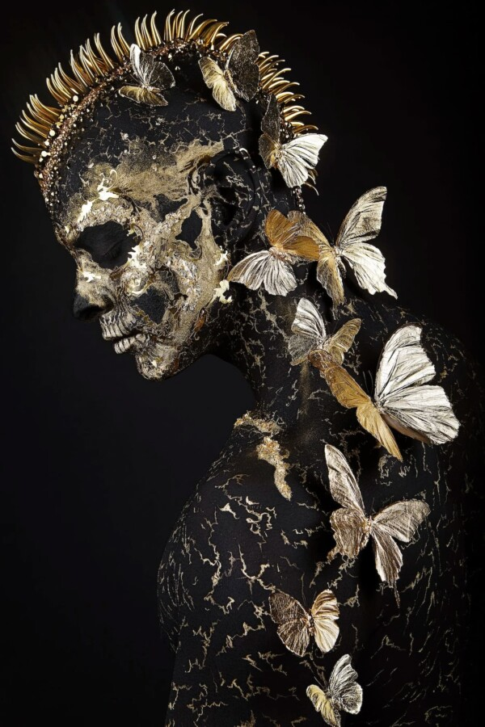

Jonas LeRiche: The Art of Becoming
Hilton Contemporary is pleased to present The Art of Becoming, an exhibition by Belgian artist Jonas LeRiche, opening Friday, March 27, 2026 at Hilton Contemporary’s River North location. This marks the artist’s debut exhibition in Chicago.
Born in Belgium, Jonas LeRiche spent a decade working as a fashion photographer before moving to New York to focus exclusively on his artistic practice. His background in fashion photography shaped his technical approach to image-making while prompting a deeper exploration of themes surrounding image culture, identity, and perception. “What matters to me is the transformation of emotions and intentional or subconscious ideas into gripping images. Each piece tells a story and the stories I create go far beyond the individual or anecdotal.” – Jonas LeRiche
LeRiche explores the tension between the artificial and the authentic, creating images that invite viewers to question what lies beneath a polished surface. His work introduces raw, natural elements into meticulously constructed scenes, challenging audiences accustomed to the seductive veneer of contemporary image culture.
LeRiche’s photographs are meticulously constructed, often assembled layer by layer through elaborate staging and direction. A single photoshoot may take a week to complete, reflecting the artist’s highly controlled approach to image-making.
LeRiche’s newest body of sculptural work, Vanity Skulls, expands on themes present in his photography while exploring the transience of life, the futility of pleasure, and the certainty of death.
LeRiche’s silkscreen editions reinterpret the “Vanity Skull” motif through printmaking. Incorporating diamond dust, gold and silver leaf, iridescent pigments, and vivid color, these works translate the sculptural form into a luminous two-dimensional format.
Hilton Contemporary’s presentation of The Art of Becoming marks the gallery’s first showcase of Jonas LeRiche’s Signature Series, including photographs, mixed media works, and sculptures. Each photographic image, previously known in contemporary formats, is reinterpreted here in a classical presentation. Produced as archival pigment prints on Hahnemühle Fine Art Baryta paper and framed with museum-grade precision, these works emphasize the depth, texture, and tonal richness of the photographic image. The result is a presentation that bridges contemporary vision with the enduring tradition of fine art photography, offering collectors the most refined and timeless expression of the work.
The Art of Becoming will be on view at Hilton Contemporary through June 1, 2026.